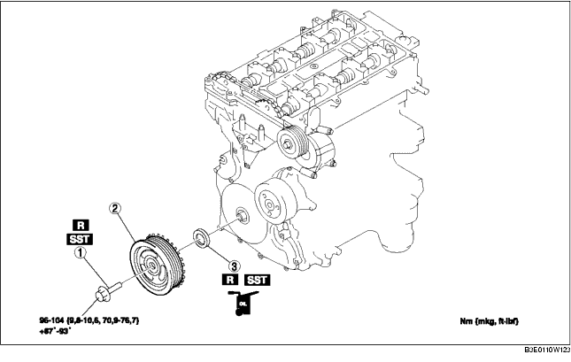

1. Abdeckplatte entfernen (Siehe ABDECKPLATTE AUSBAUEN/EINBAUEN [LF].)
2. Die Abdeckplattenhalterung entfernen.
3. Den Batteriedeckel entfernen (Siehe BATTERIE AUSBAUEN/EINBAUEN [LF].)
4. Das Massekabel der Batterie abklemmen.
5. Den Kabelbaum lösen.
6. Folgende Bauteile ausbauen.
7. Gemäß der Reihenfolge in der Tabelle ausbauen.
8. Der Einbau erfolgt in umgekehrter Reihenfolge.

.
|
1
|
Sicherungsschraube für Kurbelwellen-Riemenscheibe
|
|
2
|
Kurbelwellen-Riemenscheibe
|
|
3
|
Vorderer Wellendichtring
|
1. Den unteren Blindstopfen des Zylinderblocks herausdrehen.
2. Das SST einbauen.
3. Die Kurbelwelle im Uhrzeigersinn drehen, bis sich Zylinder Nr. 1 in OT-Stellung des Verdichtungstaktes befindet (bis das Ausgleichsgewicht am SST anstößt).
4. Die Kurbelwellen-Riemenscheibe mit den SSTs blockieren.
1. Die Dichtringlippe mit einer Rasierklinge abschneiden.
2. Die Spitze eines Schraubendrehers mit einem Tuch abdecken und den Wellendichtring heraushebeln.
1. Sauberes Motoröl auf die Dichtringlippe auftragen.
2. Den Wellendichtring vorsichtig von Hand einsetzen.
3. Den Wellendichtring mit dem SST und einem Hammer gleichmäßig eintreiben.
1. Das SST wie abgebildet an der Nockenwelle ansetzen.
2. Die Schraube (M6 x 1,0) mit der Hand hineindrehen.
3. Die Kurbelwelle im Uhrzeigersinn drehen, bis sich Zylinder Nr. 1 in OT-Stellung des Verdichtungstaktes befindet (bis das Ausgleichsgewicht am SST anstößt).
4. Die Kurbelwellen-Riemenscheibe mit den SSTs blockieren.
5. Die Sicherungsschraube für die Kurbelwellen-Riemenscheibe in der gezeigten Reihenfolge in den zwei folgenden Schritten mit Hilfe des SST (49 D032 316) festziehen.
6. Die Schraube M6 x 1,0 herausdrehen.
7. Das SST von der Nockenwelle abnehmen.
8. Das SST vom unteren Blindstopfen des Zylinderblocks entfernen.
9. Die Kurbelwelle im Uhrzeigersinn in 2 Umdrehungen in die OT-Stellung drehen.
10. Den unteren Blindstopfen des Zylinderblocks hineindrehen.